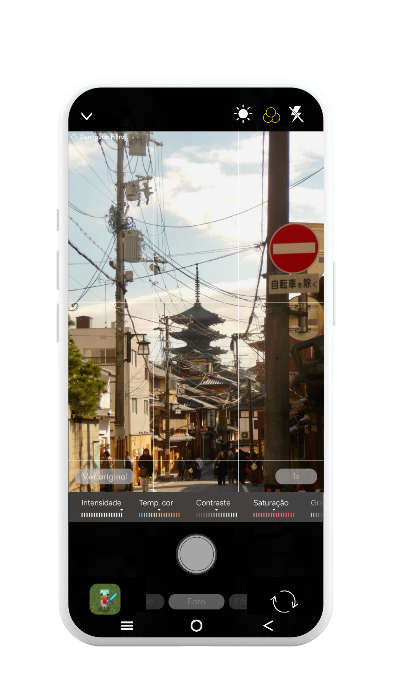
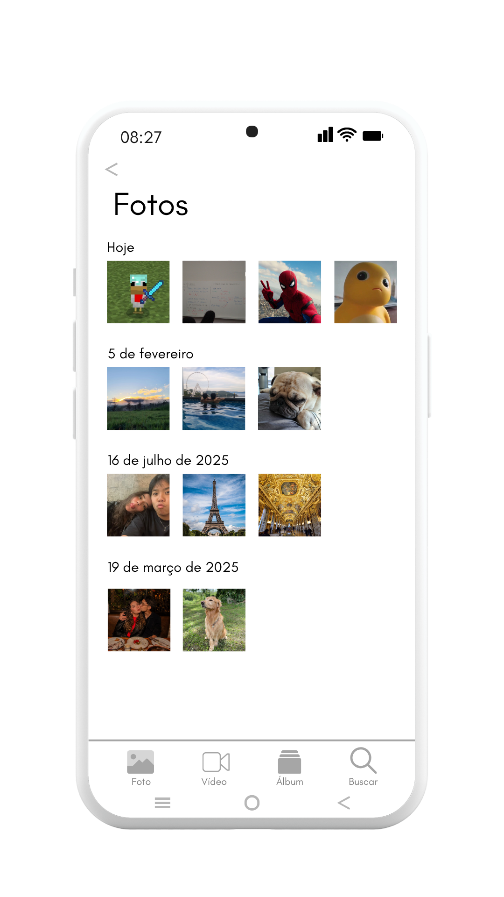

^ 1. Introdução
O InterGuide é um guia criado para auxiliar estudantes durante o uso da câmera do celular de forma prática e intuitiva. O projeto melhora a experiência do usuário com uma interface mais organizada, ergonômica e inteligente, facilitando o acesso às principais funções da câmera.
Além disso, o InterGuida oferece suporte em tempo real com sugestões de enquadramento, iluminação, zoom e posicionamento do aparelho, tornando a câmera uma ferramenta mais moderna, acessível e eficiente para estudos e gravações.

^ 2. Tela de Inicio
Bem-vindo à câmera! Aqui você pode acessar rapidamente foto, vídeo, filtros e configurações. A InterGuide identifica o que você está fazendo e sugere melhorias em tempo real para facilitar seu aprendizado.

^ 3. Menu de Modos
Cada modo da câmera foi criado para uma situação específica. O modo retrato melhora selfies, o noturno ajuda em locais escuros e o panorama captura paisagens amplas. A InterGuide pode recomendar automaticamente o melhor modo para cada ambiente.

^ 4. Câmera frontal - Video
A câmera frontal é ideal para selfies, videochamadas e gravação de conteúdo. A InterGuide pode sugerir melhor iluminação, enquadramento e posição do rosto para melhorar a qualidade da imagem durante o uso.

^ 5. Modo de Video
No modo vídeo, você pode gravar aulas, apresentações ou conteúdos criativos. A InterGuide auxilia com estabilidade, orientação da câmera e dicas de movimentação para deixar as gravações mais profissionais.

^ 6. Configurações de Video
As configurações permitem ajustar resolução, FPS e estabilização. A InterGuide explica cada opção de forma simples e recomenda automaticamente a melhor qualidade dependendo do armazenamento e da finalidade do vídeo.

^ 7. Filtro
Os filtros alteram o estilo visual da imagem em tempo real. A InterGuide ajuda o usuário a escolher filtros mais adequados para estudo, gravações educativas ou redes sociais sem exagerar nos efeitos.

^ 8. Zoom
O controle de zoom foi reposicionado para a lateral da câmera, permitindo acesso mais rápido e intuitivo durante fotos e gravações. A mudança aumenta a agilidade do usuário e facilita ajustes sem atrapalhar o enquadramento da imagem.

^ 9. Barra de Configurações
A barra de navegação foi posicionada na parte superior da interface para facilitar o acesso rápido às principais funções da câmera. Além de melhorar a organização visual, ela também é totalmente editável, permitindo que o usuário personalize atalhos e ferramentas conforme sua necessidade, tornando a experiência mais prática e eficiente.

^ 10. Celular deitado
No modo horizontal, os botões principais foram movidos para a parte superior da interface para melhorar a ergonomia durante o uso. Essa alteração facilita o alcance dos controles, oferece mais conforto ao gravar vídeos e melhora a experiência do usuário ao segurar o aparelho deitado.

^ 11. Galeria
Na galeria, a InterGuide organiza fotos e vídeos automaticamente, separando conteúdos por matéria, data ou projeto. Também pode sugerir edições rápidas e facilitar o compartilhamento de arquivos.
